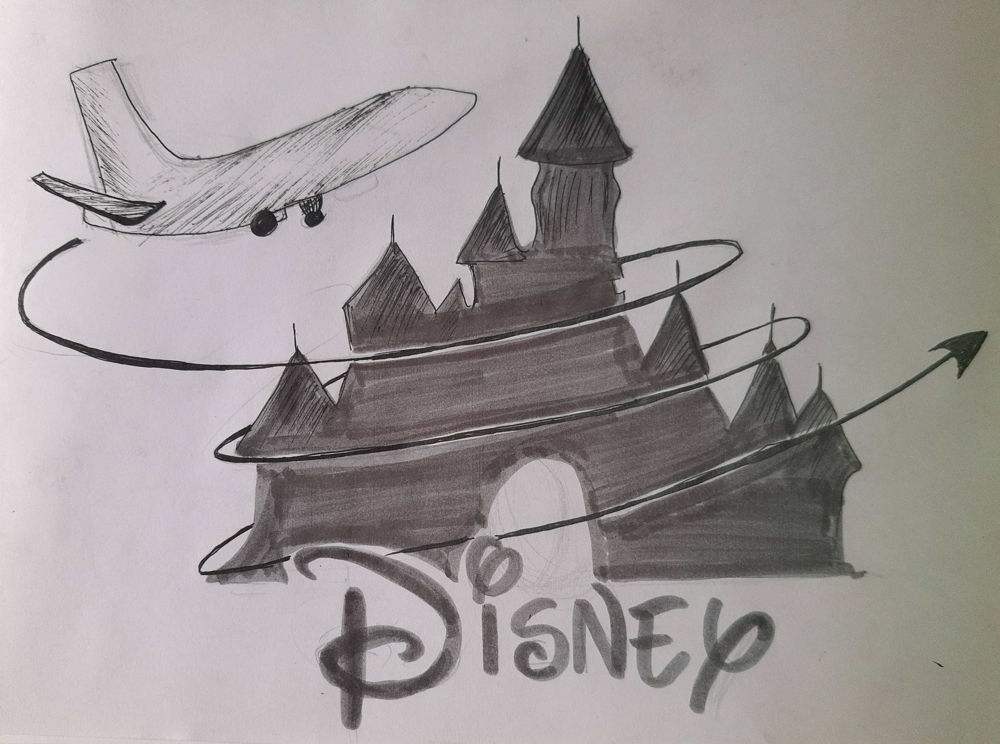

My parents and I packed our bags ready to leave for our flight from New York to Florida for the weekend.
Taking all our essentials and about leave for the airport at about 7pm. Our flight takes off at 10:30 p.m.
We took the keys, locked the house and left to catch a taxi to the airport. The temperature was almost -14 degree celsius,
me shivering and looking at the clear sky. My mom called me and said “come fast the taxi has arrived”.
I rushed to the taxi and sat inside. I asked my father how much time it would take to reach the airport.
He replied “it should take about 30 mins, but can’t be sure due to traffic”. I replied back saying ok.
We reached the airport and had a lot of time left. A few hours later we boarded the plane and sat on our seats.
I already knew this fight was going to be very boring. I had air sickness, always feeling pukish. I slept almost
the whole time. When we were landing I heard the air hostess saying “Welcome to the land of DISNEY”.
I was totally surprised not knowing anything, asked my mother “ why is the air hostess saying land of disney”.
My mother smiled at me and exclaimed “we are here to enjoy the land of princess, DISNEYLAND”. All my tiredness vanished away,
I couldn't wait for the flight to land. After landing and reaching the hotel I started jumping on the bed.
The next day we left for disneyland. Enjoyed a lot, experienced different rides and spent so much time
together that we didn’t realise how fast the time went by. When the day came to an end I hugged my parents and
thanked them for everything they had done for me.
(303 words)